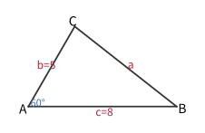

例題 1図形と計量 余弦定理・外接円の半径・面積
△ABC で \(b=5,\ c=8,\ A=60^\circ\) のとき、辺 \(a\)、外接円の半径 \(R\)、面積 \(S\) を求めよ。

【答案（テストに書く形）】
\[a=7,\quad R=\dfrac{7\sqrt3}3,\quad S=10\sqrt3\]答
△ABC で \(b=5,\ c=8,\ A=60^\circ\) のとき、辺 \(a\)、外接円の半径 \(R\)、面積 \(S\) を求めよ。

【答案（テストに書く形）】
\[a=7,\quad R=\dfrac{7\sqrt3}3,\quad S=10\sqrt3\]答